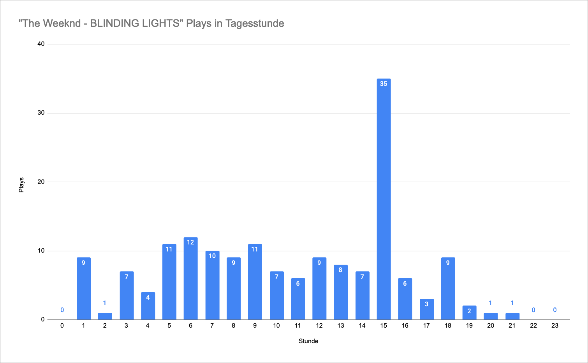
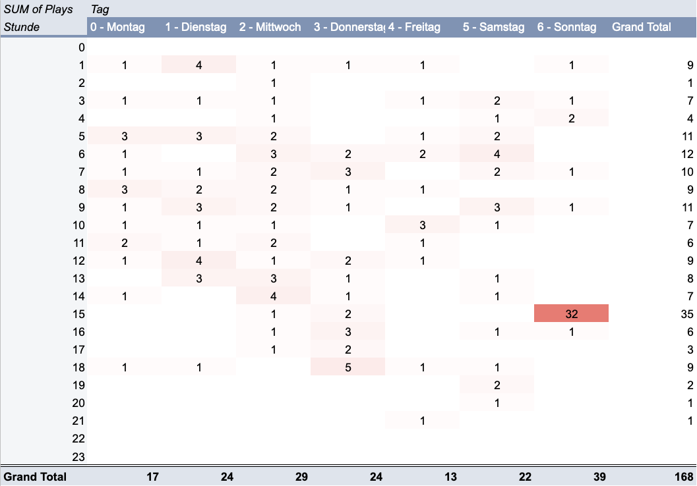

SRF3: The Weeknd 'Blinding Lights' - Verteilung der Plays während des Tages
Station: SRF3
“Blinding Lights” von The Weeknd wird auf SRF3 am häufigsten zwischen 15:00 Uhr und 16:00 Uhr gespielt.

Fügen wir die Dimension “Wochentage” in diese Rechnung ein, sehen wir dass der grossteil der Plays zwischen 15 Uhr und 16 Uhr am Sonntag stattfindet. Am Sonntag zu dieser Zeit wird auf SRF3 die offizielle Hitparade der Schweiz ausgestrahlt. Der Song war in der Schweiz für 13 Wochen auf Platz 1.

SQL Query für die Datenaufbereitung (Postgres 12)
WITH song AS (
SELECT s.id
FROM artists a
INNER JOIN songs s ON s.artist_id = a.id
WHERE upper(a.name) LIKE '%WEEKND%'
AND upper(s.title) LIKE '%BLINDING LIGHTS%'
),
broadcasts_with_tz AS (
SELECT song_id
, broadcasted_at AT TIME ZONE 'UTC' AT TIME ZONE 'Europe/Zurich' AS broadcasted_at_tz
FROM cleaned_broadcasts
WHERE song_id = (SELECT id FROM song)
),
days AS (
SELECT * FROM
(VALUES
(0, 'Montag')
, (1, 'Dienstag')
, (2, 'Mittwoch')
, (3, 'Donnerstag')
, (4, 'Freitag')
, (5, 'Samstag')
, (6, 'Sonntag')
) AS t (dow, dow_name)
),
hours AS (
SELECT generate_series AS hour
FROM generate_series(0, 23)
),
all_dow_and_hours AS (
SELECT d.dow
, h.hour
FROM days d
CROSS JOIN hours h
),
grouped_by_dow_and_hour AS (
SELECT (EXTRACT(dow FROM broadcasted_at_tz) + 6)::INT % 7 AS dow
, EXTRACT(hour FROM broadcasted_at_tz) AS hour
, count(*) AS plays
FROM broadcasts_with_tz
GROUP BY EXTRACT(hour FROM broadcasted_at_tz)
, EXTRACT(dow FROM broadcasted_at_tz)
)
SELECT dh.dow || ' - ' || d.dow_name AS dow_name
, dh.hour AS hour
, COALESCE(b.plays, 0) AS plays
FROM all_dow_and_hours dh
LEFT OUTER JOIN grouped_by_dow_and_hour b ON b.hour = dh.hour
AND b.dow = dh.dow
INNER JOIN days d ON dh.dow = d.dow
ORDER BY dh.dow, dh.hour